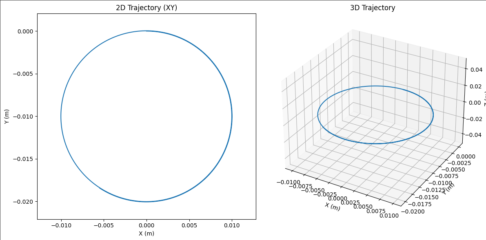
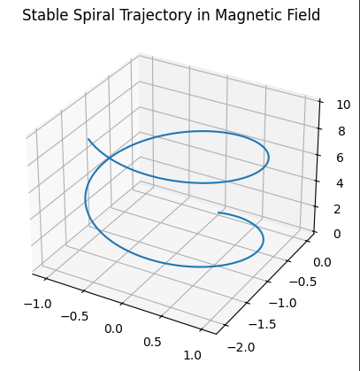
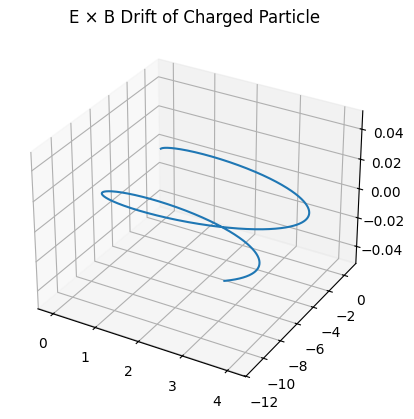

1️⃣
Electromagnetism Lorentz Force Simulation
1. Exploration of Applications
The Lorentz force, given by:
\(\vec{F} = q(\vec{E} + \vec{v} \times \vec{B})\)
is crucial in:
- Particle accelerators – where magnetic fields steer high-energy particles.
- Mass spectrometers – which use \(\vec{E}\) and \(\vec{B}\) to separate ions by mass.
- Plasma confinement – e.g. in tokamaks, where particles spiral due to strong magnetic fields.
- Astrophysics – charged particles in cosmic fields follow complex paths due to Lorentz force.
Electric fields \(\vec{E}\) accelerate charged particles, while magnetic fields \(\vec{B}\) bend their trajectories perpendicularly to velocity.
2. Simulating Particle Motion
We simulate a particle with:
- \(q = 1 \, \text{C}\)
- \(m = 1 \, \text{g} = 0.001 \, \text{kg}\)
Scenarios:
- Uniform magnetic field only – expect circular motion.
- Uniform electric + magnetic field – expect helical or drift paths.
- Crossed \(\vec{E} \perp \vec{B}\) – observe \(\vec{E} \times \vec{B}\) drift.
3. Parameter Exploration
Parameters to vary:
- Magnetic field \(\vec{B}\): magnitude and direction.
- Electric field \(\vec{E}\)
- Initial velocity \(\vec{v}_0\)
- Charge \(q\) and mass \(m\)
Observe:
- Larmor radius: \(r_L = \frac{mv}{|qB|}\)
- Drift velocity: \(\vec{v}_d = \frac{\vec{E} \times \vec{B}}{B^2}\)
4. Visualization
- Plot 2D (xy) and 3D trajectories
- Circle, spiral in z-direction, or other interesting paths
- Emphasize physical concepts (e.g., radius, velocity vector)
- Simulation Output:
  
Python Simulation Code
import numpy as np
import matplotlib.pyplot as plt
from mpl_toolkits.mplot3d import Axes3D
# Constants
q = 1.0 # Charge [C]
m = 0.001 # Mass [kg]
dt = 1e-6 # Time step [s]
steps = 10000 # Number of steps
# Fields
E = np.array([0.0, 0.0, 0.0]) # Uniform electric field [V/m]
B = np.array([0.0, 0.0, 1.0]) # Uniform magnetic field [T]
# Initial conditions
v = np.array([10.0, 0.0, 0.0]) # Initial velocity [m/s]
r = np.array([0.0, 0.0, 0.0]) # Initial position [m]
# Trajectory
trajectory = [r.copy()]
# Euler method simulation
for _ in range(steps):
F = q * (E + np.cross(v, B)) # Lorentz force
a = F / m # Acceleration
v = v + a * dt # Update velocity
r = r + v * dt # Update position
trajectory.append(r.copy())
trajectory = np.array(trajectory)
# Plotting
fig = plt.figure(figsize=(12,6))
# 2D projection
ax1 = fig.add_subplot(121)
ax1.plot(trajectory[:,0], trajectory[:,1])
ax1.set_title('2D Trajectory (XY)')
ax1.set_xlabel('X (m)')
ax1.set_ylabel('Y (m)')
ax1.axis('equal')
# 3D trajectory
ax2 = fig.add_subplot(122, projection='3d')
ax2.plot(trajectory[:,0], trajectory[:,1], trajectory[:,2])
ax2.set_title('3D Trajectory')
ax2.set_xlabel('X (m)')
ax2.set_ylabel('Y (m)')
ax2.set_zlabel('Z (m)')
plt.tight_layout()
plt.show()
🔍 Discussion
- In a pure magnetic field, the particle undergoes circular motion in a plane perpendicular to \(\vec{B}\), due to the centripetal nature of the Lorentz force.
- Adding a parallel electric field induces spiral motion (helical path).
- In crossed fields, the particle drifts at velocity \(\vec{v}_d = \vec{E} \times \vec{B}/B^2\) — used in devices like velocity selectors.
- The Larmor radius and gyrofrequency can be observed directly in the plotted paths.